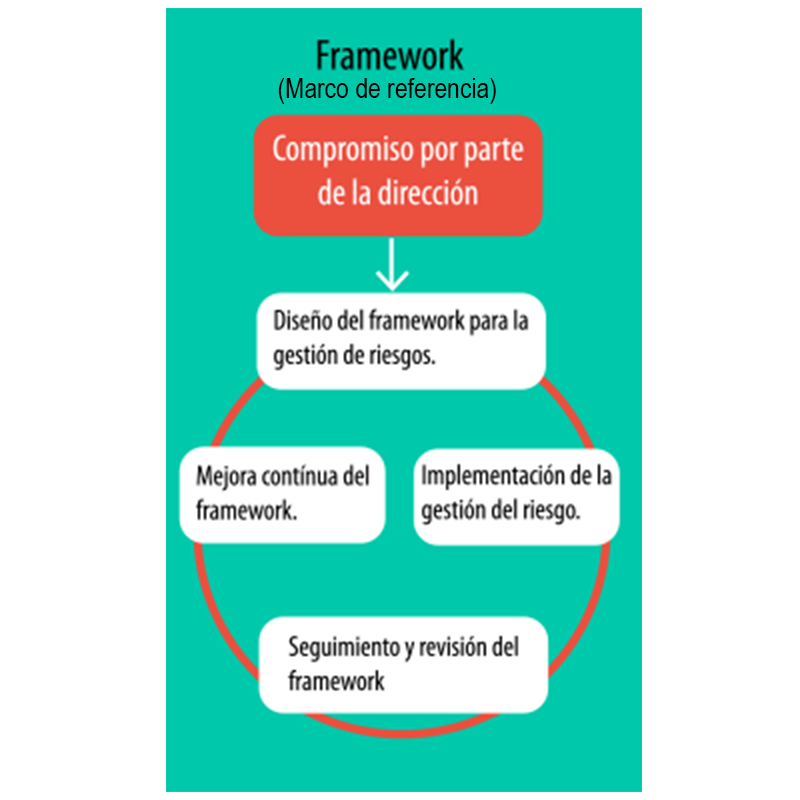

- "La gestión del riesgo es dinámica, iterativa y sensible al cambio". La gestión del riesgo debe ser flexible porque el entorno competitivo requiere que la organización pueda adaptarse rápidamente al contexto interno y externo, especialmente cuando nuevos riesgos aparecen, otros cambian o desaparecen.
- "La gestión del riesgo facilita la mejora continua de la organización". Las organizaciones con una gestión de riesgo madura, son aquellas que invierten a largo plazo y demuestran la normal realización de sus objetivos.
Marco de trabajo de la gestión del riesgo - Framework
Como se mencionó anteriormente, el marco de la gestión del riesgo definido por la ISO 31000 busca que de manera sistemática y continua la gestión del riesgo esté integrada a todos los niveles y procesos de la organización. Es por ello que parte desde el compromiso de la dirección a un ciclo de diseño, implementación, seguimiento y mejora continua del propio framework.
Marco de trabajo de la gestión del riesgo.

Compromiso por parte de la dirección
Este marco de trabajo busca compromiso por parte de la Dirección de la organización con la gestión del riesgo, para desarrollar las siguientes actividades:
- Definir y aprobar la política de gestión de riesgos.
- Asegurar la alineación de la cultura de la organización y la gestión de riesgos.
- Determinar indicadores de gestión del riesgo que estén alineados con los indicadores de desempeño de la organización.
- Asegurar el cumplimiento legal y regulatorio.
- Asignar responsabilidades y obligaciones en los niveles apropiados dentro de la organización.
- Asegurar la asignación de los recursos necesarios para la gestión de riesgos.
- Comunicar los beneficios de la gestión de riesgos a todos los interesados y
asegurarse de que el marco para la gestión del riesgo sigue siendo apropiado.
Diseño del framework para la gestión de riesgos
En esta etapa del ciclo se debe tener en cuenta:
- Entendimiento de la organización y su contexto.
- Establecimiento de una política de gestión de riesgos.
- Responsabilidades.
- Integración con los procesos de la organización.
- Recursos.
- Establecimiento de canales de comunicación interna y externa, y mecanismos de reporte.
Implementación de la gestión del riesgos
Esta etapa consiste en la aplicación del marco de trabajo para la gestión del riesgo y para ello se debe tener en cuenta:
- Definir el momento oportuno y la estrategia para la aplicación del framework.
- Aplicar la política de gestión del riesgo y en los procesos organizacionales.
- Cumplir con los requisitos legales regulatorios.
- Asegurarse de que la toma de decisiones, incluyendo el desarrollo y establecimiento de objetivos, está alineada con los resultados de los procesos de gestión de riesgos.
- Celebrar sesiones de información y formación.
- Comunicarse y consultar con las partes interesadas.